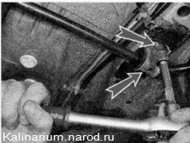

Замена подушек стабилизатора поперечной устойчивостиДля выполнения работы потребуется смотровая канава или эстакада. Снятие 1. Подготавливаем автомобиль к выполнению работы. 2. Отворачиваем гайку болта крепления стойки стабилизатора к нижнему рычагу передней подвески и выбиваем болт из отверстий стойки и рычага. Аналогично вынимаем болт соединения стойки стабилизатора с правым рычагом подвески. 3. Торцовым ключом на 13 мм с удлинителем отворачиваем две гайки крепления скобы левой подушки штанги стабилизатора к кузову. Аналогично отворачиваем гайки крепления скобы другой подушки штанги стабилизатора к кузову. 4. Снимаем штангу стабилизатора в сборе со стойками и подушками. Разборка 1. Снимаем со штанги стойки. 2. Любым доступным способом (маркером, липкой лентой) отмечаем место установки подушек на штанге. 3. Снимаем подушку со штанги, предварительно сняв с нее скобу крепления штанги стабилизатора. Установка Устанавливаем стабилизатор в обратной последовательности. Для облегчения установки подушек и стоек нанесите на штангу мыльный раствор. |